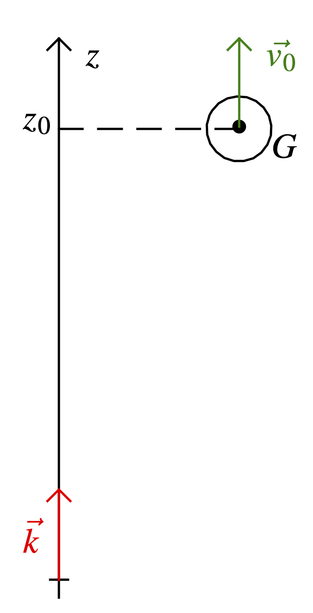
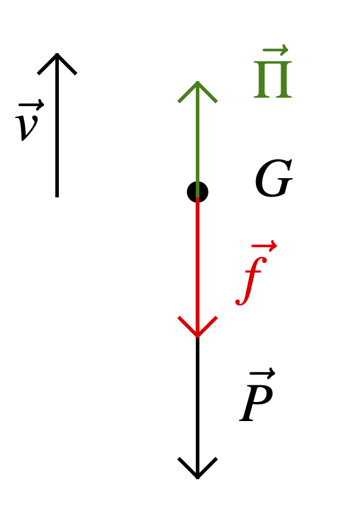
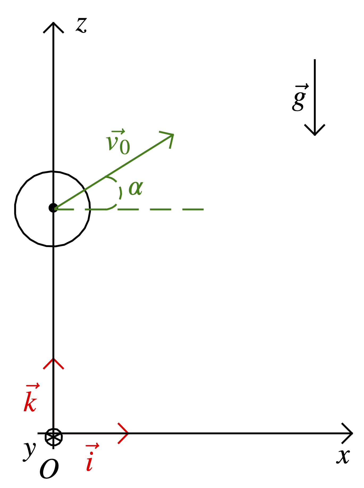
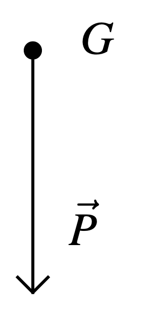
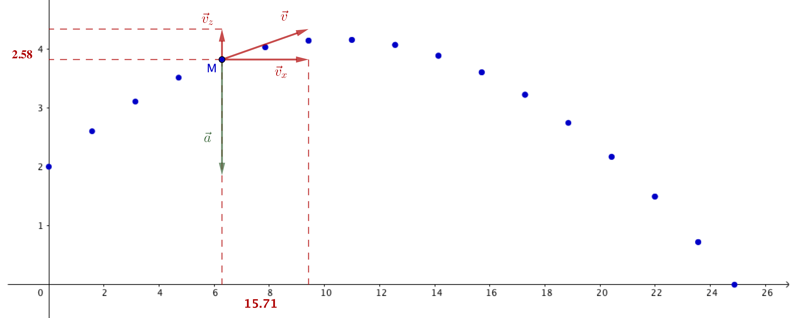

Champ de pesanteur
Notion de champ
Les physiciens pensent que toutes les interactions sont assurées par des champs (gravitationnel, électromagnétique, nucléaire, etc). Un corps $A$ suscite l’apparition dans l’espace d’un champ de forces qui se manifeste par des forces appliquées à n’importe quel objet $B$ placé en ce point (et sensible à cette interaction bien sûr). Ce champ de forces existe que l’objet $B$ soit présent ou pas et peut perdurer après la disparition ou le déplacement du corps $A$1.
Champ de pesanteur en un point de l’espace
On modélise l’interaction entre une masse $m_{1}$ ponctuelle, placée en un point $M$ quelconque au voisinage de la Terre et cette dernière par une force appelée poids, notée $\overrightarrow{P_{1}}$, de direction la verticale du lieu, dirigée vers la Terre et de valeur proportionnelle à la masse $m_{1}$. De même, une masse $m_{2}$ placée au même point $M$ est soumise au poids $\overrightarrow{P_{2}}$ de mêmes direction et sens que $\overrightarrow{P_{1}}$ et de valeur proportionnelle à la masse $m_{2}$. On peut renouveler l’opération avec une masse $m_{3}$, on obtient un comportement similaire à ceux décrits ci-dessus. Le coefficient de proportionnalité étant identique dans tous les cas présentés, $$ \dfrac{\overrightarrow{P_{1}}}{m_{1}} = \dfrac{\overrightarrow{P_{2}}}{m_{2}} = \dfrac{\overrightarrow{P_{3}}}{m_{3}} = \ldots $$
La Terre communique donc au point $M$ de l’espace une propriété telle que toute masse ponctuelle qui est placée en ce point est soumise à une action proportionnelle à la valeur de cette masse et appelée poids. L’action par unité de masse qu’exerce la Terre en un point $M$ est appelée le champ de pesanteur au point $M$ et notée $\overrightarrow{g} (M)$. Finalement,
$$ \overrightarrow{g} (M) = \left( \dfrac{\overrightarrow{P_{1}}}{m_{1}} \right)_{\text{en } M} = \left( \dfrac{\overrightarrow{P_{2}}}{m_{2}} \right)_{\text{en } M} = \left( \dfrac{\overrightarrow{P_{3}}}{m_{3}} \right)_{\text{en } M} = \ldots $$
et
\[ \overrightarrow{P_{1}} \text{en } M = m \overrightarrow{g} (M) \]
Champ de pesanteur uniforme
À l’échelle de la planète, la direction et la valeur du champ de pesanteur varient. Cependant, on peut déterminer que pour deux points de la surface de la terre distants de 2 kilomètres l’angle que font entre eux deux vecteurs champ de pesanteur est de l’ordre de 0,01° et que l’intensité (ou valeur) du champ de pesanteur varie de moins de 1 % lorsqu’on s’élève de $\pu{32 km}$. Par conséquent, pour des régions de l’espace limitées à quelques kilomètres, on peut considérer que $\overrightarrow{g}$ est un vecteur pratiquement constant. On dit alors que le champ de pesanteur est uniforme.
Modélisation de l’interaction avec un fluide
Poussée d’Archimède
La poussée d’Archimède est la force qui s’exerce sur un
objet immobile ou en mouvement, plongé totalement ou partiellement dans un
fluide soumis à un champ de pesanteur.
La poussée d’Archimède correspond à une action verticale, vers le haut
et égale au poids du fluide déplacé par l’objet, de la part du fluide
sur l’objet.
\[ \overrightarrow{\Pi} = \left\lbrace \begin{array}{ll} \text{point d’application :} & \text{centre d’inertie de l’objet}\cr \text{direction :} & \text{droite verticale}\cr \text{sens :} & \text{vers le haut}\cr \text{valeur :} & \Pi = m_{\operatorname{fluide}} \hspace{0.17em} g = \rho _{\operatorname{fluide}} \hspace{0.17em} V_{\text{objet immergé}} \hspace{0.17em} g \end{array} \right. \]
où $\rho _{\operatorname{fluide}}$ est la masse volumique du fluide et $V_{\text{objet immergé}}$ le volume de l’objet immergé dans le fluide.
Plus fondamentalement, la poussée d’Archimède est la résultante des forces pressantes qu’exerce le fluide sur la surface de l’objet : la pression étant plus forte sur la partie inférieure d’un objet immergé que sur sa partie supérieure, il en résulte une poussée globalement verticale orientée vers le haut.
Réponse
\[ \overrightarrow{\Pi} = - \rho _{\text{fluide}}\, V_{\text{objet immergé}}\, \overrightarrow{g} \]
Cette écriture indique bien que les vecteurs $\overrightarrow{\Pi}$ et $\overrightarrow{g}$ sont colinéaires, de sens opposés et que $\Pi = \rho _{\text{fluide}}\, V_{\text{objet immergé}}\, g$.
Force de frottement fluide
Une force de frottement fluide est une force de contact qu’il faut ajouter à la poussée d’Archimède pour modéliser l’interaction d’un fluide et d’un objet en mouvement dans ce dernier.
\[ \overrightarrow{f} \left\lbrace \begin{array}{ll} \text{direction :} & \text{celle du vecteur vitesse} \overrightarrow{v}\cr \text{sens :} & \text{opposé à celui du vecteur vitesse } \overrightarrow{v}\cr \text{valeur :} & f = kv^n \end{array} \right. \]
où le coefficient $k$ exprime la proportionnalité entre $f$ et $v$.
Cette force dépend de la vitesse de l’objet par rapport au fluide, de la forme et de la texture de cet objet ; les valeurs du coefficient de proportionnalité $k$ et de l’exposant $n$ dans l’expression de la valeur de la force $\overrightarrow{f}$ dépendent donc de la situation expérimentale étudiée ($n$ est souvent égal à 1 ou 2).
Réponse
\[ \overrightarrow{f} = - k\, v^{n - 1}\, \overrightarrow{v} \]
Cette écriture indique bien que les vecteurs $\overrightarrow{f}$ et $\overrightarrow{v}$ sont colinéaires, de sens opposés et que $f = k\, v^{n - 1}\, v = k\, v^n$.
Chute verticale dans le champ de pesanteur uniforme – Utilisation des lois de Newton
Situation étudiée
On lance une balle, de masse $m$, verticalement vers le haut depuis l’altitude $z_{0}$ au dessus de l’origine choisie.
On cherche à déterminer :
- L’altitude maximale $z_{\max}$ jusqu’à laquelle la balle va s’élever.
- La valeur de la vitesse $v_{1}$ lorsque la balle repassera à l’altitude $z_{0}$ et en particulier la relation entre $v_{1}$ et $v_{0}$.
- Au bout de quelle durée la balle atteint le sol (origine des altitudes) et avec quelle vitesse.
Mise en équation
On suppose que les frottements avec l’air sont négligeables.
Réponse
- Système = {balle}
- Étude des interactions:
- Système – Terre modélisée par le poids $\overrightarrow{P}$
- Système – Air modélisée par la poussée d’Archimède $\overrightarrow{\Pi}$ et la force de frottement fluide $\overrightarrow{f}$
- Référentiel d’étude = {terrestre, considéré galiléen}
- Schéma : 
- Deuxième loi de Newton : \[ m \overrightarrow{a} = \overrightarrow{P} + \overrightarrow{\Pi} + \overrightarrow{f} \] avec $\overrightarrow{a}$ l’accélération du système. À ce stade, on effectue l’hypothèse suivante (généralement indiquée dans les exercices) : la balle est un système de petit volume, beaucoup plus dense que l’air dans lequel elle se déplace. On peut donc négliger l’interaction du système avec l’air. \[ m \overrightarrow{a} = \overrightarrow{P} = m \overrightarrow{g} \] ou \[ \overrightarrow{a} = \overrightarrow{g} \tag{1} \]
Réponse
L’accélération du système est colinéaire au champ de pesanteur. C’est une constante, le mouvement est uniformément accéléré.
Établissement des équations horaires du mouvement
Projection de l’équation du mouvement
Réponse
La relation (1) est vectorielle, on choisit un repère afin de la transformer en système d’équations scalaires. Comme le mouvement sera manifestement vertical — à une dimension donc — on choisit le repère cartésien $(O ; \overrightarrow{k})$.
Dans ce repère, $\overrightarrow{g} = - g \overrightarrow{k}$ que l’on peut écrire : $\overrightarrow{g} (- g)$ et $\overrightarrow{a_{G}} = a_{z} \overrightarrow{k}$ que l’on peut écrire : $\overrightarrow{a_{G}} (a_{z})$.
L’inconnue $a_{z}$, comme toute composante d’un vecteur le long d’une axe,
est une grandeur algébrique (positive, nulle ou négative, donc) ; son
signe donne une indication du sens du vecteur
$\overrightarrow{a_{G}}$ (comparativement à celui du vecteur $\overrightarrow{k}$), sa
valeur absolue est égale à la valeur du vecteur aG
Finalement l’équation (1) s’écrit, une fois projetée,
\[ a_{z} = - g \tag{2} \]
Détermination de la composante $v_{z}$ de la vitesse le long de l’axe $(Oz)$
Réponse
Puisque l’accélération est le taux de variation instantanée de la vitesse, $a_{z} = \dfrac{\mathrm{d} v_{z}}{\mathrm{d} t}$ et
\[ \left( 2 \right) \Leftrightarrow \dfrac{\mathrm{d} v_{z}}{\mathrm{d} t} = - g \tag{3} \]
On cherche donc à déterminer l’expression de la fonction $v_{z} (t)$ à partir de celle de sa dérivée. Ce raisonnement s’appelle intégration en mathématique.
En cours de physique, il n’est pas nécessaire de savoir intégrer, il suffit par exemple d’essayer de répondre à la question suivante : quelle fonction $v_{z}$ de la variable $t$, une fois dérivée par rapport à $t$, est égale à la constante $- g$ ?
\[ \left( 3 \right) \Rightarrow v_{z} (t) = - gt + A \]
où $A$ est une constante réelle, puisque $\dfrac{\mathrm{d} v_{z}}{\mathrm{d} t} = \dfrac{\mathrm{d} (- gt + A)}{\mathrm{d} t} = - g$.
Nous n’avons pas trouvé une fonction $v_{z}$ mais une famille de fonctions, puisque $A$ peut être n’importe quel réel. Afin de déterminer la fonction solution du problème il est nécessaire (et c’est suffisant) de connaître sa valeur à une date. On choisit généralement la date $t = 0$ et on appelle alors cette valeur la « condition initiale ».
$v_{z} (0) = - g \times 0 + A = v_{0} \Leftrightarrow A = v_{0}$ car $\overrightarrow{v_{0}} = v_{0} \overrightarrow{k}$ est la vitesse initiale du système.
Finalement
\[ v_{z} (t) = - gt + v_{0} \tag{4} \]
Détermination de la composante $z$ de la position le long de l’axe $(Oz)$
Réponse
Puisque la vitesse est le taux de variation instantanée de la position, $v_{z} = \dfrac{\mathrm{d} z}{\mathrm{d} t}$ et
\[ \left( 4 \right) \Leftrightarrow \dfrac{\mathrm{d} z}{\mathrm{d} t} = - gt + v_{0} \tag{5} \]
Ici encore il est nécessaire de se poser la question : quelle fonction $z$ de la variable t, une fois dérivée par rapport à t, est égale à la constante $- gt + v_{0}$ ?
\[ \left( 5 \right) \Rightarrow z (t) = - \dfrac{1}{2} gt^2 + v_{0} t + B \]
où $B$ est une constante réelle, puisque $\dfrac{\mathrm{d} z}{\mathrm{d} t} = \dfrac{\mathrm{d} (- 1 / 2 \hspace{0.17em} gt^2 + v_{0} t + B)}{\mathrm{d} t} = - gt + v_{0}$.
Pour déterminer la fonction $z$ recherchée, il est encore une fois nécessaire d’utiliser une condition initiale : $z (0) = - \dfrac{1}{2} g \times 0^2 + v_{0} \times 0 + B = z_{0} \Leftrightarrow B = z_{0}$.
Finalement
\[ z (t) = - \dfrac{1}{2} gt^2 + v_{0} t + z_{0} \tag{6} \]
Utilisation des équations horaires
Détermination de l’altitude $z_{\max}$
Réponse
Puisque l’on a uniquement accès aux équations horaires du mouvement, c’est à dire aux équations paramétriques donnant la position ou la vitesse en fonction du temps, il faut ajouter à la question posée une première étape faisant intervenir le temps. La question devient donc :
- À quelle date le système parvient-il à l’altitude maximale ?
- Quelle est l’altitude maximale ?
Lorsque la balle se trouve à sa position d’altitude maximale, sa vitesse est nulle. Donc
\[ v_{z} (t_{\max}) = 0 = - gt_{\max} + v_{0} \]
Le système parvient donc à l’altitude maximale à la date $t_{\max}$ telle que
\[ t_{\max} = \dfrac{v_{0}}{g} \]
Comme
\[ z_{\max} = z (t_{\max}) = - \dfrac{1}{2} \, g \left( \dfrac{v_{0}}{g} \right)^2 + v_{0}\, \dfrac{v_{0}}{g} + z_{0} \]
alors
\[ z_{\max} = \dfrac{1}{2}\, \dfrac{v_{0}^2}{g} + z_{0} \]
Détermination de la valeur de la vitesse $v_{1}$ lorsque la balle repasse à l’altitude $z_{0}$
Réponse
Puisque l’on a uniquement accès aux équations horaires du mouvement, c’est à dire aux équations paramétriques donnant la position ou la vitesse en fonction du temps, il faut ajouter à la question posée une première étape faisant intervenir le temps. La question devient donc :
- À quelle date le système repasse-t-il à l’altitude $z_{0}$ ?
- Quelle est alors sa vitesse ?
La balle repasse à l’altitude $z_{0}$ à la date $t_{1}$ telle que
\[ z (t_{1}) = z_{0} = - \dfrac{1}{2}\, gt_{1}^2 + v_{0} t_{1} + z_{0} \]
Donc
\[ 0 = t_{1} \left( - \dfrac{1}{2} gt_{1} + v_{0} \right) \]
L’équation précédente admet deux solutions : $t_{1} = 0$ (bien évidemment ce n’est pas celle que l’on cherche) et $t_{1} = \dfrac{2 v_{0}}{g}$.
La composante de la vitesse à la date $t_{1}$ est :
\[ v_z(t_1)= - g t_1 + v_0 = -g \dfrac{2 v_{0}}{g} + v_0 = -v_0 \]
et sa valeur
\[ v_{1} = \lvert v_{z} (t_{1}) \rvert = v_{0} \]
La balle repasse à l’altitude $z_{0}$ avec sa vitesse initiale.
Détermination de la date d’arrivée au sol (altitude nulle) et de la vitesse du système à cette date
Réponse
Soit $t_{2}$ la date d’arrivée de la balle au niveau du sol, alors
\[ z (t_{2}) = 0 = - \dfrac{1}{2}\, gt_{2}^2 + v_{0} t_{2} + z_{0} \]
$t_{2}$ est donc la racine positive du polynôme du second degré.
Une fois cette date déterminée, la vitesse du système au niveau du sol s’obtient à partir de l’expression de $v_{z}$ :
\[ v_{2} = \lvert v_{z} (t_{2}) \rvert = \lvert - gt_{2} + v_{0} \rvert \]
Chute verticale dans le champ de pesanteur uniforme – Utilisation des théorèmes énergétiques
Utilisation du théorème de l’énergie cinétique
Réponse
Le problème est à une dimension et ne s’intéresse qu’aux deux points extrêmes ; le théorème de l’énergie cinétique est donc généralement une très bonne option pour le résoudre simplement.
La seule force présente étant le poids, le théorème de l’énergie cinétique s’écrit : \[ \Delta E_C = \dfrac{1}{2}\, mv_F^2 - \dfrac{1}{2}\, mv_I^2 = W_{IF}(\overrightarrow{P}) = \overrightarrow{P}\cdot\overrightarrow{IF} \] où $I$ est la position initiale et $F$ le point d’altitude maximale. Comme $v_I = v_0$, $v_F=0$, $\overrightarrow{P}\cdot\overrightarrow{IF} = -mg\, \vec{k} \cdot (z_{\text{max}} - z_0)\, \vec{k} = -mg (z_{\text{max}} - z_0)$, \[ z_{\text{max}} = z_0 + \dfrac{v_0^2}{2g} \]
Réponse
Le problème est à une dimension et ne s’intéresse qu’aux deux points extrêmes ; le théorème de l’énergie cinétique est donc généralement une très bonne option pour le résoudre simplement.
La seule force présente étant le poids, le théorème de l’énergie cinétique s’écrit : \[ \Delta E_C = \dfrac{1}{2}\, mv_F^2 - \dfrac{1}{2}\, mv_I^2 = W_{IF}(\overrightarrow{P}) = \overrightarrow{P}\cdot\overrightarrow{IF} \] où $I$ est la position initiale et $F$ le point qui coïncide avec le point de départ atteint lorsque le système redescend.
Comme $v_I = v_0$, $v_F = v_1$ et $\overrightarrow{P}\cdot\overrightarrow{IF} = -mg\, \vec{k} \cdot \vec{0} = 0$, \[ v_1 = v_0 \]
Réponse
Le problème est à une dimension et ne s’intéresse qu’aux deux points extrêmes ; le théorème de l’énergie cinétique est donc généralement une très bonne option pour le résoudre simplement.
La seule force présente étant le poids, le théorème de l’énergie cinétique s’écrit : \[ \Delta E_C = \dfrac{1}{2}\, mv_F^2 - \dfrac{1}{2}\, mv_I^2 = W_{IF}(\overrightarrow{P}) = \overrightarrow{P}\cdot\overrightarrow{IF} \] où $I$ est la position initiale et $F$ le point d’altitude 0. Comme $v_I = v_0$ et $\overrightarrow{P}\cdot\overrightarrow{IF} = -mg\, \vec{k} \cdot (0 - z_0)\, \vec{k} = mg z_0$, \[ v_F = \sqrt{v_0^2 + 2g z_0} \]
Utilisation du théorème de l’énergie mécanique
Réponse
Le problème est à une dimension et ne s’intéresse qu’aux deux points extrêmes ; le théorème de l’énergie mécanique est donc généralement une très bonne option pour le résoudre simplement.
La seule force présente étant le poids et cette force étant conservative, l’énergie mécanique du système se conserve. Donc : \[ \Delta E_M = 0 \iff E_{M}(F) - E_{M}(I) = 0 \iff E_{M}(F) = E_{M}(I) \] donc \[ \dfrac{1}{2}\, mv_F^2 + mgz_{\text{max}} = \dfrac{1}{2}\, mv_I^2 + mgz_0 \] ou \[ mgz_{\text{max}} = \dfrac{1}{2}\, mv_0^2 + mgz_0 \] puisque $v_I = v_0$ et $v_F=0$. Finalement, \[ z_{\text{max}} = z_0 + \dfrac{v_0^2}{2g} \]
Réponse
Le problème est à une dimension et ne s’intéresse qu’aux deux points extrêmes ; le théorème de l’énergie mécanique est donc généralement une très bonne option pour le résoudre simplement.
La seule force présente étant le poids et cette force étant conservative, l’énergie mécanique du système se conserve. Donc : \[ \Delta E_M = 0 \iff E_{M}(F) - E_{M}(I) = 0 \iff E_{M}(F) = E_{M}(I) \] Comme $E_{PP}(F) = E_{PP}(I)$ (mêmes altitudes), $E_{C}(F) = E_{C}(I)$ et $v_F=v_0$
Réponse
Le problème est à une dimension et ne s’intéresse qu’aux deux points extrêmes ; le théorème de l’énergie mécanique est donc généralement une très bonne option pour le résoudre simplement.
La seule force présente étant le poids et cette force étant conservative, l’énergie mécanique du système se conserve. Donc : \[ \Delta E_M = 0 \iff E_{M}(F) - E_{M}(I) = 0 \iff E_{M}(F) = E_{M}(I) \] donc \[ \dfrac{1}{2}\, mv_F^2 = \dfrac{1}{2}\, mv_0^2 + mgz_0 \] puisque $z_F = 0$. Finalement \[ v_F = \sqrt{v_0^2 + 2g z_0} \]
Mouvement plan dans le champ de pesanteur uniforme – Lois de Newton
Situation étudiée
On lance une balle, de masse $m$, vers le haut et vers la droite, avec un angle $\alpha$ par rapport à l’axe $(Ox)$, depuis l’altitude $z_{0}$ au dessus de l’origine choisie.
On cherche à déterminer:
- La forme de la trajectoire.
- L’altitude maximale $z_{\max}$ jusqu’à laquelle la balle va s’élever.
- La portée du lancer, c’est à dire la distance parcourue horizontalement par la balle avant de toucher le sol.
Mise en équation
Réponse
- Système = {balle}
- Étude des interactions:
- Système – Terre modélisée par le poids $\overrightarrow{P}$
- Système – Air modélisée par la poussée d’Archimède $\overrightarrow{\Pi}$ et la force de frottement fluide $\overrightarrow{f}$. HypothèseLe système est de petit volume et beaucoup plus dense que l’air. L’interaction avec l’air est donc négligeable.
- Référentiel d’étude = {terrestre, considéré galiléen}
- Schéma : 
- Deuxième loi de Newton : \[ m \overrightarrow{a_{G}} = \overrightarrow{P} = m \overrightarrow{g} \] avec $\overrightarrow{a}$ l’accélération du système. Finalement \[ \overrightarrow{a_{G}} = \overrightarrow{g} \tag{7} \]
Encore une fois, le système est en chute libre dans le champ de pesanteur terrestre.
Établissement des équations horaires du mouvement
Projection de l’équation du mouvement
Réponse
La relation (7) est vectorielle, on choisit un repère afin de la transformer en système d’équations scalaires. À priori le mouvement peut s’effectuer selon les trois dimensions de l’espace, on choisit donc le repère cartésien $(O ; \overrightarrow{i}, \overrightarrow{j}, \overrightarrow{k})$.
Dans ce repère, $\overrightarrow{g} = - g \overrightarrow{k}$ que l’on peut écrire : $\overrightarrow{g} \begin{pmatrix} 0 \cr 0 \cr -g\end{pmatrix}$ et $\overrightarrow{a_{G}} = a_{x} \overrightarrow{i} + a_{y} \overrightarrow{j} + a_{z} \overrightarrow{k}$ que l’on peut écrire : $\overrightarrow{a_G} \begin{pmatrix} a_x \cr a_y \cr a_z\end{pmatrix}$.
Finalement, l’équation (7) s’écrit une fois projetée : $$a_x = 0 \tag{8}$$ $$a_y = 0 \tag{9}$$ $$a_z = -g \tag{10}$$
Réponse
- Les relations (8) et (9) indiquent que selon les axes $(Ox)$ et $(Oy)$ il n’y a pas de mouvement ou que ce mouvement est (rectiligne) uniforme.
- La relation (10) indique que le mouvement est uniformément accéléré selon l’axe $(Oz)$.
Détermination des composantes du vecteur vitesse
Réponse
Puisque l’accélération est le taux de variation instantanée de la vitesse, $$ (8) \Leftrightarrow \dfrac{\mathrm{d} v_x}{\mathrm{d} t} =0 \tag{11} $$ $$ (9)\Leftrightarrow \dfrac{\mathrm{d} v_y}{\mathrm{d} t} =0 \tag{12} $$ $$ (10)\Leftrightarrow \dfrac{\mathrm{d} v_z}{\mathrm{d} t} =-g \tag{13} $$ L’intégration de ces relations conduit aux familles de fonctions suivantes : $$ (11) \Rightarrow v_x(t)=A \tag{14} $$ $$ (12) \Rightarrow v_y(t)=B \tag{15} $$ $$ (13) \Rightarrow v_z(t)=-gt+C \tag{16} $$
Afin de déterminer les fonctions $v_{x}$, $v_{y}$ et $v_{z}$ solutions du problème, il est nécessaire (et suffisant) d’utiliser la condition initiale sur la vitesse :
\[ \overrightarrow{v_{0}} \quad \left( \begin{array}{l} v_{0 x} = v_{0} \cos (\alpha)\cr v_{0 y} = 0\cr v_{0 z} = v_{0} \sin (\alpha) \end{array} \right) \]
donc $$ v_x(0) = A = v_0 \cos (\alpha) $$ $$ v_y(0) = B = 0 $$ $$ v_z(0 = -g \times 0 + C = v_0 \sin (\alpha) $$
Finalement $$ v_x(t) = v_0 \cos (\alpha) \tag{17} $$ $$ v_y(t)=0 \tag{18} $$ $$ v_z(t)=-gt+v_0 \sin (\alpha) \tag{19} $$
Réponse
- La relation (17) nous indique que le mouvement est uniforme selon l’axe $(Ox)$.
- La relation (18) nous indique qu’il n’y a aucun mouvement selon l’axe $(Oy)$.
Le mouvement s’inscrit donc dans le plan $(xOz)$.
Détermination des coordonnées de la position
Réponse
Puisque la vitesse est le taux de variation de la position, $$ (17) \Leftrightarrow \dfrac{\mathrm{d} x}{\mathrm{d} t} =v_0 \cos (\alpha) \tag{20} $$ $$ (18)\Leftrightarrow \dfrac{\mathrm{d} y}{\mathrm{d} t} =0 \tag{21} $$ $$ (19)\Leftrightarrow \dfrac{\mathrm{d} v_z}{\mathrm{d} t} = -gt+v_0 \sin (\alpha) \tag{21} $$
L’intégration de ces relations conduit aux familles de fonctions suivantes: $$ (20) \Rightarrow x(t)=v_0 \cos (\alpha)\, t + D \tag{23} $$ $$ (21) \Rightarrow y(t)=E \tag{24} $$ $$ (22) \Rightarrow z(t)=-\dfrac{1}{2}\, gt^2 + v_0 \sin (\alpha)\, t + F \tag{25} $$
Afin de déterminer les fonctions $x$, $y$ et $z$ solutions du problème, il est nécessaire (et suffisant) d’utiliser la condition initiale sur la position :
\[ \overrightarrow{\text{OM}_{0}} \quad \left( \begin{array}{c} 0 \cr 0 \cr z_{0} \end{array} \right) \]
donc $$ x(0) = v_0 \cos (\alpha) \times 0 + D = 0 $$ $$ y(0) = E = 0 $$ $$ z(0) = -\dfrac{1}{2} \times 0^2 + v_0 \sin (\alpha) \times 0 + F = z_0 $$ Finalement $$ x(t) = v_0 \cos (\alpha)\, t \tag{26} $$ $$ y(t)=0 \tag{27} $$ $$ z(t) = -\dfrac{1}{2}\, gt^2 + v_0 \sin (\alpha)\, t + z_0 \tag{28} $$
Utilisation des équations horaires
Détermination de la trajectoire de la balle
Réponse
La détermination de la trajectoire nécessite d’établir la relation qui existe entre les coordonnées d’espace. Il faut donc éliminer le temps dans les relations (26) et (28).
\[ (26) \Leftrightarrow t = \dfrac{x}{v_{0} \cos (\alpha)} \]
En substituant le temps $t$ dans la relation (28), on obtient $$ z (x) = -\dfrac{1}{2}\,g \left(\dfrac{x}{v_{0} \cos (\alpha)}\right)^2 + v_0 \sin (\alpha) \left(\dfrac{x}{v_{0} \cos (\alpha)}\right) + z_0 $$ $$ z (x) = -\dfrac{1}{2}\,g \left(\dfrac{x}{v_{0} \cos (\alpha)}\right)^2 + \tan (\alpha) x + z_0 \tag{29} $$ Le mouvement de la balle est parabolique.
Détermination de la position de la flèche
Réponse
Le raisonnement est identique à celui mis en œuvre dans la section 3.4.1 ; la balle se trouve à sa position d’altitude maximale lorsque la composante verticale de sa vitesse est nulle. Donc
\[ v_{z} (t_{F}) = 0 = - gt_{F} + v_{0} \sin \alpha \]
soit
\[ t_{F} = \dfrac{v_{0} \sin \alpha}{g} \]
et comme
\[ z_{\max} = z (t_{F}) = - \dfrac{1}{2} g \left( \dfrac{v_{0} \sin \alpha}{g} \right)^2 + v_{0} \sin \alpha \dfrac{v_{0} \sin \alpha}{g} + z_{0} \]
alors
\[ z_{\max} = \dfrac{1}{2} \dfrac{(v_{0} \sin \alpha)^2}{g} + z_{0} \]
De même,
\[ x_{F} = x (t_{F}) = v_{0} \cos \alpha \dfrac{v_{0} \sin \alpha}{g} \]
ou
\[ x_{F} = \dfrac{v_{0}^2 \sin (2 \alpha)}{2 g} \]
Détermination de la portée
Réponse
Deux raisonnements sont possibles :
- À partir de la trajectoire
- $x_{p}$ est la racine positive de l’équation
\[ 0 = - \dfrac{1}{2} \hspace{0.17em} g \left( \dfrac{x_{p}}{v_{0} \cos (\alpha)} \right)^2 + \tan (\alpha) x_{p} + z_{0} \]
- À partir des équations horaires
- Comme toujours à partir des équations horaires, il est nécessaire de déterminer la date à laquelle l’évènement étudié a lieu.
- Soit $t_{p}$ la date à laquelle le système touche le sol. $t_{p}$ est la racine positive de l’équation \[ z(t_p) = 0 = - \dfrac{1}{2}\, gt_{p}^2 + v_{0} \sin (\alpha) t_{p} + z_{0} \]
- On peut alors déterminer $x_{p}$ puisque \[ x_{p} = x (t_{p}) = v_{0} \cos (\alpha) t_{p} \]
-
En effet l’information selon laquelle $A$ s’est déplacé ou a disparu se propage é vitesse finie (cf. cours sur les ondes). Par exemple, on voit dans le ciel des étoiles qui ont disparu ou qui ne se trouvent plus à l’endroit où on les vise. ↩︎